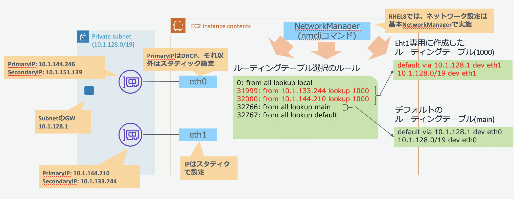

Linuxでは、OS(カーネル)で複数のルーティングテーブルを用意し、ポリシールールに従い利用するルーティングテーブルを選択できる機能があります(ポリシーベースのルーティング機能)。 複数ENI構成の場合は、eth1専用にルーティングテーブルを作成し、通信元のIPアドレスがeht1上の場合は、eth1専用のルーティングテーブルを利用するようにポリシーベースのルールで振り分けを行うようにします。 またネットワーク設定はRHEL8では、NetworkManagerでの設定が基本となるため、NetworkManagerを利用し検証を実施ししました。 
bashとAWS CLIが利用可能な環境でENIを２つアタッチし、それぞれのENIでプライベートIPアドレスを２個持つRHEL8のインスタンスを作成します。
インスタンスの作成
PROFILE="default" #AWS CLIのプロファイル指定
KEYNAME="CHANGE_KEY_PAIR_NAME" #環境に合わせてキーペア名を設定してください。
INSTANCE_TYPE="t2.micro"
SUBNETID="subnet-0f749f5bbba38d36c" #環境に合わせてサブネットIDを変更
SGID="sg-0d9a558782eb72e22" #環境に合わせてセキュリティーグループIDを変更
HOSTNAME="rhel8-nic2-test"
#最新のAmazon Linux2のAMI IDを取得します。
RHEL8_AMIID=$(aws --profile ${PROFILE} --output text \
ec2 describe-images \
--filters 'Name=name,Values=RHEL-8.?.?_HVM-????????-x86_64-?-Hourly2-GP2' \
'Name=state,Values=available' \
--query 'reverse(sort_by(Images, &CreationDate))[:1].ImageId' ) ;
#設定内容の確認
echo -e "KEYNAME = ${KEYNAME}\nINSTANCE_TYPE= ${INSTANCE_TYPE}\nSUBNETID = ${SUBNETID}\nSGID = ${SGID}\nRHEL8_AMIID = ${RHEL8_AMIID}\nHOSTNAME = ${HOSTNAME}"
#インスタンスの作成
#タグ設定
TAGJSON='
[
{
"ResourceType": "instance",
"Tags": [
{
"Key": "Name",
"Value": "'"${HOSTNAME}"'"
}
]
}
]'
#ユーザデータ設定(ホスト名の設定)
USER_DATA='#!/bin/bash -xe
yum -y update
hostnamectl set-hostname '"${HOSTNAME}"'
'
#インターフェース設定(ENIを２つアタッチし、ENIあたり２個のPrivateIPAddressを付与)
INTERFACE_JSON='[
{
"DeviceIndex": 0,
"DeleteOnTermination": true,
"Description": "primary interface",
"SubnetId": "'"${SUBNETID}"'",
"InterfaceType": "interface",
"Groups": [ "'"${SGID}"'" ],
"SecondaryPrivateIpAddressCount": 1
},
{
"DeviceIndex": 1,
"DeleteOnTermination": true,
"Description": "secondary interface",
"SubnetId": "'"${SUBNETID}"'",
"InterfaceType": "interface",
"Groups": [ "'"${SGID}"'" ],
"SecondaryPrivateIpAddressCount": 1
}
]'
# サーバの起動
aws --profile ${PROFILE} \
ec2 run-instances \
--image-id ${RHEL8_AMIID} \
--instance-type ${INSTANCE_TYPE} \
--key-name ${KEYNAME} \
--network-interfaces "${INTERFACE_JSON}" \
--tag-specifications "${TAGJSON}" \
--user-data "${USER_DATA}" ;
作成したインスタンスのネットワーク構成確認
aws --profile ${PROFILE} \
ec2 describe-instances \
--filters "Name=tag:Name,Values=${HOSTNAME}" \
"Name=instance-state-name,Values=running" \
--query 'sort_by(Reservations[].Instances[].NetworkInterfaces[], &Attachment.DeviceIndex)[].{id:Attachment.DeviceIndex,networkid:NetworkInterfaceId,Mac:MacAddress,PrimIp:PrivateIpAddress,ips:PrivateIpAddresses[].PrivateIpAddress}'
[
{
"id": 0,
"networkid": "eni-00f1631b3adf80546",
"Mac": "06:5f:be:3b:ed:72",
"PrimIp": "10.1.144.246",
"ips": [
"10.1.144.246",
"10.1.151.139"
]
},
{
"id": 1,
"networkid": "eni-0ff99886f57aaf9f6",
"Mac": "06:60:81:a9:9a:58",
"PrimIp": "10.1.144.210",
"ips": [
"10.1.144.210",
"10.1.133.244"
]
}
]
ec2-userでログインするls /sys/class/net/
eth0 eth1 lo
cat /sys/class/net/eth0/address
06:5f:be:3b:ed:72
$ cat /sys/class/net/eth1/address
06:60:81:a9:9a:58
ip address show
1: lo: <LOOPBACK,UP,LOWER_UP> mtu 65536 qdisc noqueue state UNKNOWN group default qlen 1000
link/loopback 00:00:00:00:00:00 brd 00:00:00:00:00:00
inet 127.0.0.1/8 scope host lo
valid_lft forever preferred_lft forever
inet6 ::1/128 scope host
valid_lft forever preferred_lft forever
2: eth0: <BROADCAST,MULTICAST,UP,LOWER_UP> mtu 9001 qdisc fq_codel state UP group default qlen 1000
link/ether 06:5f:be:3b:ed:72 brd ff:ff:ff:ff:ff:ff
inet 10.1.144.246/19 brd 10.1.159.255 scope global dynamic noprefixroute eth0
valid_lft 1934sec preferred_lft 1934sec
inet6 fe80::45f:beff:fe3b:ed72/64 scope link
valid_lft forever preferred_lft forever
3: eth1: <BROADCAST,MULTICAST,UP,LOWER_UP> mtu 9001 qdisc fq_codel state UP group default qlen 1000
link/ether 06:60:81:a9:9a:58 brd ff:ff:ff:ff:ff:ff
inet 10.1.144.210/19 brd 10.1.159.255 scope global dynamic noprefixroute eth1
valid_lft 3284sec preferred_lft 3284sec
inet6 fe80::ab9f:d1a2:66fc:ddd0/64 scope link noprefixroute
valid_lft forever preferred_lft forever
| aws ec2 describe-instances情報 | OS情報 | |||||
|---|---|---|---|---|---|---|
| DeviceID | Network Interface ID | Mac | Primary IP | 2nd IP | device | 初期に付与されているIP |
| 0 | eni-00f1631b3adf80546 | 06:5f:be:3b:ed:72 | 10.1.144.246 | 10.1.151.139 | eth0 | 10.1.144.246/19 |
| 1 | eni-0ff99886f57aaf9f6 | 06:60:81:a9:9a:58 | 10.1.144.210 | 10.1.133.244 | eth1 | 10.1.144.210/19 |
eth1が不完全な状態のためデバイスの再設定を行う。
nmcli connection show
NAME UUID TYPE DEVICE
System eth0 5fb06bd0-0bb0-7ffb-45f1-d6edd65f3e03 ethernet eth0
Wired connection 1 84cdca34-9f7a-3e60-a316-419c5a1e4170 ethernet eth1
ens3 80caddf5-1347-4246-827e-5e0146c7f2c5 ethernet --
Wired connection 1が不完全な状態で登録されている(/etc/sysconfig/network-scripts/に必要な設定ファイルがない)ことと、不要なens3が存在するため、これらの既存コネクションを削除し再登録を行います。
これは、eth0はcloud-initによる初期化で設定が追加されていますが、eth1はcloud-initでは追加されず、NetworkManagerがOS起動時にeth1デバイスを自動検知しネットワークを自動設定しているため設定がないものと想定しております。
sudo nmcli connection delete ens3
sudo nmcli connection delete 'Wired connection 1'
mcli connection show
NAME UUID TYPE DEVICE
System eth0 5fb06bd0-0bb0-7ffb-45f1-d6edd65f3e03 ethernet eth0
SECOND_ENI_PRIM_IP="10.1.144.210"
SECOND_ENI_PRIM_IP_MASKBIT="19"
SUBNET_NETADDRESS="10.1.128.0/19"
SUBNET_GWADDR="10.1.128.1"
sudo nmcli connection add type ethernet ifname eth1 con-name eth1 \
ipv4.addresses ${SECOND_ENI_PRIM_IP}/${SECOND_ENI_PRIM_IP_MASKBIT} \
ipv4.routes "${SUBNET_NETADDRESS} 0.0.0.0 table=1000, 0.0.0.0/0 ${SUBNET_GWADDR} table=1000" \
ipv4.routing-rules "priority 32000 from ${SECOND_ENI_PRIM_IP} lookup 1000"
nmcli connection show
NAME UUID TYPE DEVICE
System eth0 5fb06bd0-0bb0-7ffb-45f1-d6edd65f3e03 ethernet eth0
eth1 524d63a5-eea3-4cee-b30d-11a9c7adacfd ethernet eth1
ip address
1: lo: <LOOPBACK,UP,LOWER_UP> mtu 65536 qdisc noqueue state UNKNOWN group default qlen 1000
link/loopback 00:00:00:00:00:00 brd 00:00:00:00:00:00
inet 127.0.0.1/8 scope host lo
valid_lft forever preferred_lft forever
inet6 ::1/128 scope host
valid_lft forever preferred_lft forever
2: eth0: <BROADCAST,MULTICAST,UP,LOWER_UP> mtu 9001 qdisc fq_codel state UP group default qlen 1000
link/ether 06:5f:be:3b:ed:72 brd ff:ff:ff:ff:ff:ff
inet 10.1.144.246/19 brd 10.1.159.255 scope global dynamic noprefixroute eth0
valid_lft 3313sec preferred_lft 3313sec
inet6 fe80::45f:beff:fe3b:ed72/64 scope link
valid_lft forever preferred_lft forever
3: eth1: <BROADCAST,MULTICAST,UP,LOWER_UP> mtu 9001 qdisc fq_codel state UP group default qlen 1000
link/ether 06:60:81:a9:9a:58 brd ff:ff:ff:ff:ff:ff
inet 10.1.144.210/19 brd 10.1.159.255 scope global noprefixroute eth1
valid_lft forever preferred_lft forever
inet6 fe80::d201:b5b:6a90:c40c/64 scope link noprefixroute
valid_lft forever preferred_lft forever
ip route show
default via 10.1.128.1 dev eth0 proto dhcp metric 100
default via 10.1.128.1 dev eth1 proto dhcp metric 101
10.1.128.0/19 dev eth0 proto kernel scope link src 10.1.144.246 metric 100
10.1.128.0/19 dev eth1 proto kernel scope link src 10.1.144.210 metric 101
ip route show table 1000 <==追加された新しいルーティングテーブル
default via 10.1.128.1 dev eth1 proto static metric 101
10.1.128.0/19 dev eth1 proto static scope link metric 101
ip rule show
0: from all lookup local
32000: from 10.1.144.210 lookup 1000 <==追加されたルール
32766: from all lookup main
32767: from all lookup default
それぞれのENIに、２つ目以降のプライベートIPアドレスを追加設定します。
#add 2nd ip address to the Prima ENI.
PRIMARY_ENI_NM_CONNECTION_NAME="System eth0"
PRIMARY_ENI_2ND_IP="10.1.151.139"
PRIMARY_ENI_2ND_IP_MASKBIT="19"
sudo nmcli connection modify "${PRIMARY_ENI_NM_CONNECTION_NAME}" \
+ipv4.addresses ${PRIMARY_ENI_2ND_IP}
#設定の反映のためリブート(dhcpとの組み合わせだとリブートしないと上手く動作しない模様)
sudo reboot
注意: +ipv4.routing-rulesのpriorityは、既存のものと重複しないようにすること。また既存より小さい番号にすること
```shell
#add 2nd ip address to the 2nd ENI
SECOND_ENI_NM_CONNECTION_NAME="eth1"
SECOND_ENI_2ND_IP="10.1.133.244"
SECOND_ENI_2ND_IP_MASKBIT="19"
sudo nmcli connection modify "${SECOND_ENI_NM_CONNECTION_NAME}" \
+ipv4.addresses ${SECOND_ENI_2ND_IP}/${SECOND_ENI_2ND_IP_MASKBIT} \
+ipv4.routing-rules "priority 31999 from ${SECOND_ENI_2ND_IP} lookup 1000"
#設定の反映
sudo nmcli connection down "${SECOND_ENI_NM_CONNECTION_NAME}"
sudo nmcli connection up "${SECOND_ENI_NM_CONNECTION_NAME}"
ip address
1: lo: <LOOPBACK,UP,LOWER_UP> mtu 65536 qdisc noqueue state UNKNOWN group default qlen 1000
link/loopback 00:00:00:00:00:00 brd 00:00:00:00:00:00
inet 127.0.0.1/8 scope host lo
valid_lft forever preferred_lft forever
inet6 ::1/128 scope host
valid_lft forever preferred_lft forever
2: eth0: <BROADCAST,MULTICAST,UP,LOWER_UP> mtu 9001 qdisc fq_codel state UP group default qlen 1000
link/ether 06:5f:be:3b:ed:72 brd ff:ff:ff:ff:ff:ff
inet 10.1.151.139/32 scope global noprefixroute eth0
valid_lft forever preferred_lft forever
inet 10.1.144.246/19 brd 10.1.159.255 scope global dynamic noprefixroute eth0
valid_lft 3175sec preferred_lft 3175sec
inet6 fe80::45f:beff:fe3b:ed72/64 scope link
valid_lft forever preferred_lft forever
3: eth1: <BROADCAST,MULTICAST,UP,LOWER_UP> mtu 9001 qdisc fq_codel state UP group default qlen 1000
link/ether 06:60:81:a9:9a:58 brd ff:ff:ff:ff:ff:ff
inet 10.1.144.210/19 brd 10.1.159.255 scope global noprefixroute eth1
valid_lft forever preferred_lft forever
inet 10.1.133.244/19 brd 10.1.159.255 scope global secondary noprefixroute eth1
valid_lft forever preferred_lft forever
inet6 fe80::71b7:8ea9:428c:b1b8/64 scope link noprefixroute
valid_lft forever preferred_lft forever
ip rule show
0: from all lookup local
31999: from 10.1.133.244 lookup 1000
32000: from 10.1.144.210 lookup 1000
32766: from all lookup main
32767: from all lookup default